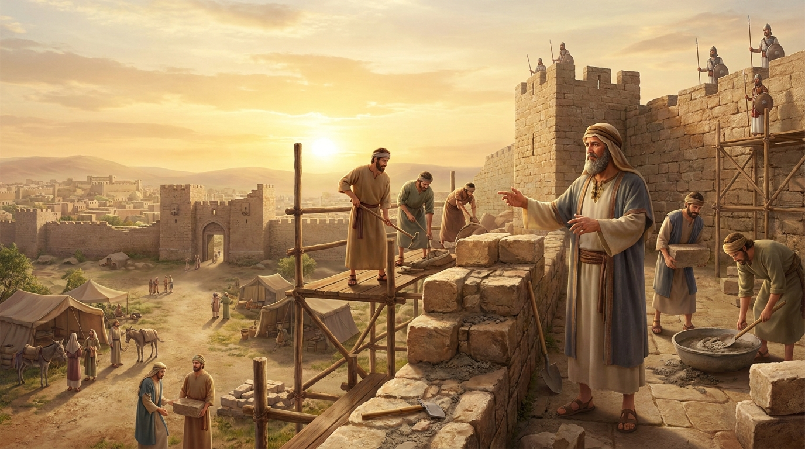

A Reconstrução dos Muros e da Identidade
O livro de Neemias dá continuidade histórica ao livro de Esdras. Ele narra a inspiradora história de Neemias, um copeiro do rei persa que, ao ouvir sobre a miséria de Jerusalém, ora e pede permissão para retornar e reconstruir as muralhas da cidade. O livro é um manual clássico sobre liderança sob pressão, dependência de Deus através da oração, superação de forte oposição e a restauração da identidade espiritual e moral do povo de Deus.
Ficha Técnica
- Autor: O próprio Neemias (frequentemente agrupado com Esdras na tradição hebraica).
- Tema Principal: Liderança piedosa, reconstrução dos muros de Jerusalém, oração e a renovação da aliança do povo com Deus.
- Versículo-Chave: "Então eu lhes disse: 'Vocês estão vendo a situação terrível em que estamos: Jerusalém está em ruínas, e as suas portas foram destruídas pelo fogo. Venham, vamos reconstruir o muro de Jerusalém, para que não fiquemos mais na miséria'." (Neemias 2:17)
Estrutura
- A oração de Neemias e sua jornada para Jerusalém (Caps. 1-2)
- A reconstrução do muro sob intensa oposição (Caps. 3-7)
- O avivamento liderado por Esdras e a renovação da Aliança (Caps. 8-10)
- A repovoação da cidade, dedicação dos muros e reformas (Caps. 11-13)